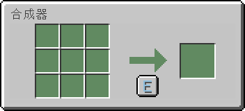

合成器 (Crafting Machine)
物品命令 /loot give @s loot cpp:crafting_machine
合成器是本模组用于合成的一个实用型方块。
获取
合成器可使用任意工具或直接空手采集，但斧是最快的。
| 方块 | 合成器 |
|---|---|
| 硬度 | 2.5 |
| 工具 | 斧 |
| 挖掘用时 | |
| 徒手 | 3.75 |
| 木质 | 1.9 |
| 石质 | 0.95 |
| 铁质 | 0.65 |
| 钻石质 | 0.5 |
| 下界合金质 | 0.45 |
| 金质 | 0.35 |
合成
| 材料 | 合成配方 |
|---|---|
| 附魔之瓶+工作台 |

用途
将物品放入合成器界面左侧九宫格输入栏即可自动合成出产物。
合成器的函数接口 function #cpp:crafting_machine 调用于 cpp/functions/crafting_machine/type.mcfunction。配方按物品数量分类，位于 cpp/predicates/crafting_machine 和 cpp/loot_tables/crafting_machine。